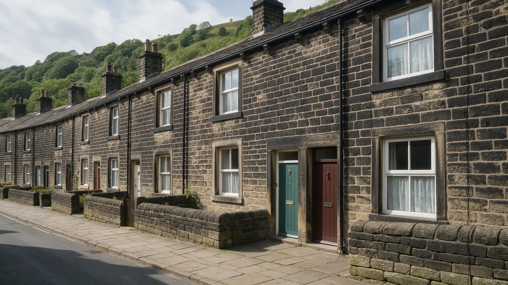

Areas we cover
Based in Calderdale.
These five are the places we cover most. It is sample coverage for this demo rather than a real patch, because Grainhurst is not a real firm and has no address. Just outside it? Ask anyway.
- Hebden BridgeJoinery in Hebden Bridge
- TodmordenJoinery in Todmorden
- MytholmroydJoinery in Mytholmroyd
- RippondenJoinery in Ripponden
- RastrickJoinery in Rastrick
Each one is marked sample coverage. Grainhurst Joinery is fictional and has no address.

Generated photoGenerated for this demo.
Houses round here
Why nothing gets measured once.
Stone, and a hundred and fifty years of settling
Most of the housing in these valleys is stone built and well over a century old, often on a slope, sometimes an over and under where two dwellings share a stack of walls. The walls are thick and solid and almost none of them are plumb. Openings are a different size at the top than the bottom, floors fall towards the middle of a room, and a chimney breast is rarely a true right angle to the wall beside it. That is why everything gets measured in three places and scribed rather than cut to a number.
Water, and what it has done to the timber
These valleys have had serious water through them more than once, and even where a house has never flooded it sits in a damp, shaded, rainy place. So the timber that wants looking at is always in the same spots: the bottoms of door frames and doors, the ends of floorboards and joists near an outside wall, window sills and the bottom rails of sashes, and skirting on a wall that has had water against it. We check those before quoting rather than after, because new timber fitted onto wet timber is money thrown away.
Somewhere on that list?
Or near it. Tell us the job and your postcode and we will come and measure it.